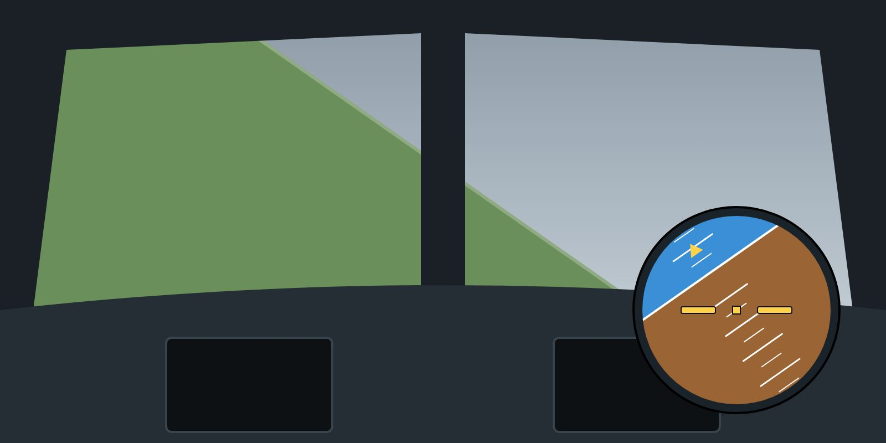

If you recognise a developing upset, correct it immediately with small, smooth inputs. A small correction now prevents a large recovery later.
In a nose-low, high-bank upset, which way should you roll to bring the wings level?
Answer: B. The sky pointer points towards the sky. Rolling towards it brings the lift vector up and the wings level by the shortest way.
Training material only. It does not replace the Aircraft Flight Manual, FCOM, QRH, MEL or the Domestic Airlines Operations Manual, which always take precedence.